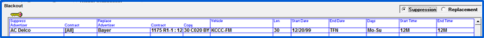

Logs Screen
Generating final logs does three key things: Copy is assigned during log generation (when selected), the affiliate system is updated with spot information, and the last final log date is automatically advanced in the Vehicle -> Options -> Logs screen.
If applicable, when entering the Logs Screen, you will be asked to select which Markets you would like to generate Logs for. Only those vehicles that are within the selected Markets will be accessible. Generating Logs by Market reduces the amount of vehicles on the Log Screen. Once selected, click Continue.
Logs
The Logs screen is divided into two main sections. The top part of the screen is used to choose different parameters for the logs that will be generated, and the middle part of the screen lists vehicles that the log can be generated for. Action buttons at the bottom of the screen are also available, and are explained later in this section.
The basic procedure for generating a log is to select the parameters to use from the top part of the screen, verify that the vehicles that you want to generate the log for are selected with a checkmark in the “Gen” field, then press the Generate button to generate the log.
Log Options
The top part of the Logs screen is used to select different parameters for the logs that will be generated.
Logs
- Preliminary logs are used to run a log before running the final log to proofread the log. It does not update the “Last Final Log Date” that is stored in Vehicle Options.
- The ability to run preliminary logs is a Site Option setting.
- Final logs are used to generate the actual final Traffic log.
- Generating a final log will update the last final log date.
- Generating a final log will assign copy (if selected).
- Generating a final log automatically sends all spot information to the Affiliate System. If the Station Spot Builder is used (on version 7.0 and above), the log week will be added to the queue and affiliate spots will be created by the Station Spot Builder when ready.
- Reprint logs are used to print a final log over again.
- Reprint will generate the log and reassign copy if there is new copy (if "assign copy" is checked on).
- If any changes occur to a vehicle or copy, logs must be reprinted to communicate those changes to the Affiliate System.
- Alert is used to filter the vehicle list to only include vehicles that have a log alert, such as when a spot is moved or copy is changed for a closed week that the log has already been generated for.
- Internal Reprint is used if you have the Affiliate System and need to reprint a log but do not need the spots updated on the Affiliate System.
Report Destination
- Display – Will show the selected vehicle Log/CP on screen.
- Print – Will send the selected vehicle Log/CP to the printer.
- File - Will allow you to select a file format to save the Log/CP to from the dropdown.
Time
Start and end times are available for requesting partial logs. The default is 12M to 12M.
Assign Copy
Checking on the “Assign Copy” checkbox will assign the copy to the spots based on the rotation instructions. A Site Options setting allows this to be checked on by default.
Vehicle Selection
The center of the Logs screen lists the vehicles that the log can be generated for. Any white field can be altered. Yellow fields will automatically update. You can sort the vehicles by working date or vehicle name by clicking the blue column headers.
You can select which logs to generate by clicking in the “Gen” field to place a checkmark there. Any vehicles with a checkmark in the “Gen” field will have their log generated when the Generate button at the bottom of the screen is pressed.
With the “Final” log option, when the “Set Gen Checks” checkbox at the bottom of the screen is checked, the system will automatically select all vehicles where the working date is either today’s date or a date in the past. Uncheck the “Set Gen Checks” checkbox to deselect those vehicles (individual vehicles can also be deselected manually by clicking the checkmark in the “Gen” field).
The following fields are shown for each vehicle listed:
Working Date: The date on which the final log should be generated. This is calculated by taking the closing start date and subtracting the “Lead Time” from it. For example, if the closing start date is 12/21/15, and the lead time is three days, the working date will be 12/18/15 (three days prior to the closing start date).
Vehicle: The vehicle name.
Last Log Date: The last date closed for this vehicle. Typically the day before the closing start date.
Lead Time: The number of days in advance of the closing start date that the log must be generated on. For example, if you generate the log on Wednesday for the following Monday, then the lead time would be five.
Cycle: The number of days included in the log. If you generate a week’s worth of logs at once, the Cycle would be 7, if you generate 24 hour logs one day at a time, the Cycle would be 1.
Note: Sports Vehicles should be set to 1 day cycles
Closing Start Date and End Date: The date range that the log will be generated for. This is calculated automatically for Final logs, and can be altered for Prelim and Reprint logs by clicking the Start Date field and selecting another date.
Log, C of P, Other: These are the log/CP formats that will be used for this vehicle. By default, the formats specified on the Vehicle Options screen Log tab (described above) are automatically selected, although you can override those choices here.
Logo: The logo file used by the vehicle.
Zone: The time zone used for the log.
Action Buttons
At the bottom of the Logs screen are action buttons that are used to preform specific log-related actions.
Log Check
The system has a built in check program that checks for unfilled avails, spots missing copy, missing rotations, missed spots, reservation and holds, and inconsistent spots. The Log Check program can be run manually by pressing the Log Check button, or it can be run when generating final logs by answering “Yes” on the “Run Log Check” prompt (select “No” on this prompt to bypass running the Log Check program and to simply generate the log).
The following log check options are available:
- Unsold Avails: Will verify that every avail on the Log has been filled.
- Copy Not Assigned: Copy not Assigned is used when you manually assign copy to spots before generating the Log. If you do not assign copy until the log is generated, all copy will be unassigned for the spots.
- Missing Rotation: This will check to see that all spots have a rotation defined and ready to be assigned.
- Reservation: This option will show you if there are any reservation spots still booked in the select vehicle/week. (Reservation spots should not be on the final log as they are used to reserve space for future, expected contracts.)
- Hold Contracts: This check will show you if there are any spots from ‘Hold’ contracts on the Log. If there are, these contracts should be changed from Hold to Order before generating the final logs.
- Missed Spots: Will check for any missed spots for the selected vehicle/week. This may be useful in some cases, for example, if the missed spots should have been booked prior to the closing the log.
- Inconsistent: The Inconsistent check checks for three things:
- If there is an airing vehicle with no selling to airing links.
- If there is no programming for a log week.
- If there is a log vehicle with no associated conventional vehicles.
Blackout
Spots that are objectionable, in a different language, or advertise products not available in a region, may need to be suppressed on certain vehicles/stations and replaced with an appropriate advertiser. The Blackout feature will remove these spots from the Log and either leave the avail open, or fill the avail with a replacement spot.
Replacement spots will be sent to the Affiliate System, but will not appear on invoices.
The Blackout Replacement and the Blackout Suppression report will show you the information that you have entered for the Replacement or Suppression advertisers.
Click the Blackout button to enter the Replacement Screen, and define the advertisers that should replace the suppressed spots.
The replacement spots may be made in three ways. Each method is designed to solve specific problems. A user may use any of the methods exclusively, or may mix all three methods.
- Replace by specific advertiser: Using this method, each advertiser to be suppressed is assigned a specific replacement advertiser.
- Replace by date and time: Using this method, the advertisers to be suppressed are indicated, without specifying who will replace them. Use this method when you want to the rotation of the replacement spots to evenly schedule.
- Replace with a list of spots imported from an external source: This is useful if an outside producer has a list of spots to use as replacements.
When a spot is suppressed, the scheduler starts at the beginning of the Replacement Screen as a spot is needed, the next spot found in the list that matches the length, and falls within the date, day, and time restrictions of the log being generated will be selected. Spots not meeting those restrictions or spots that have product conflicts will be skipped.
- Advertiser – Select the advertiser that will be used to replace the suppressed spots. The advertisers specified can be anything – PSA’s, Promos, or commercial spots
- Contract – Select a specific contract, or all contracts
- Cart - You must select a cart that is currently airing in a rotation, otherwise the advertiser cannot be entered on the Replacement screen
- Product Protection – One or two product protection categories may be entered on each line
- Vehicle – A specific vehicle can be selected for the replacement advertiser or ‘All’ vehicles will allow the advertiser to replace any suppressed spots
- Dates - The date range defaults to the cart’s date range, but any range can be specified
Once the replacement advertisers are defined, you can suppress Advertisers from airing, and select replacement spots in the Suppression Screen.

- Select the Advertiser that is not to air
- The system will suppress all contracts for the Advertiser
- Select a Replacement Advertiser and Contract
- Select the Copy that is to air
- Select the Vehicle, or all Vehicles that is to black out the original Advertiser and air the replacement spot
- Select the spot length
- Select the Start and End Dates, and the Start and End Times of the suppressed and replacement spot
Blackout Replacement Import
The third Option of specifying Replacement spots is to import them from an external source in the Affiliate Tracking System.
On the Affiliate System, the Import Spot Data menu allows you to import the blackouts. In the example below, the location of the import file is specified, and the spots will be imported on top of existing spots.
Blackout Warning Message
If no advertiser spots are found to replace the suppressed spot, a warning message will be shown when the log is generated.
If no spot is found on the replacement list that can run instead of the suppressed spot, that avail will not show on the log unless the question for this Vehicle in the Log Option, “Retain Unsold Time if No Replacement Exist for Suppressed Spot” is turned on. Blank avails may be filled in with an import, or may be manually edited in the Counterpoint Affiliate system.
Split Fill
When a Split Network buy is made for some of the stations affiliated to a network, the system allows as many other buys as can be sold to share those avails with the first split buyer, as long each of the spilt advertisers is buying different stations.
No matter how many advertisers share a split avail, there are bound to be some stations not bought by anyone. Split Network Fill automatically puts spots on the website for those stations not in any of the spilt buys. Usually, these Fills are PSAs, but they can be commercials, as long as the user understands that these commercials will not appear on an invoice. Advertisers with split networks cannot be used as split fills.
Click the Split Fill button and enter the list of PSAs or spots which the system will use as Fills when the spots are sent to the Counterpoint Affidavit System.
- Select the Advertiser that is to be used as a Fill
- Select a Replacement Contract
- Select the Copy that is to air
- Select the Vehicle, or all Vehicles that can be filled with these spots
- Select the Start and End Dates, and days of the week to fill
- Select the Start and End Times of the Fills